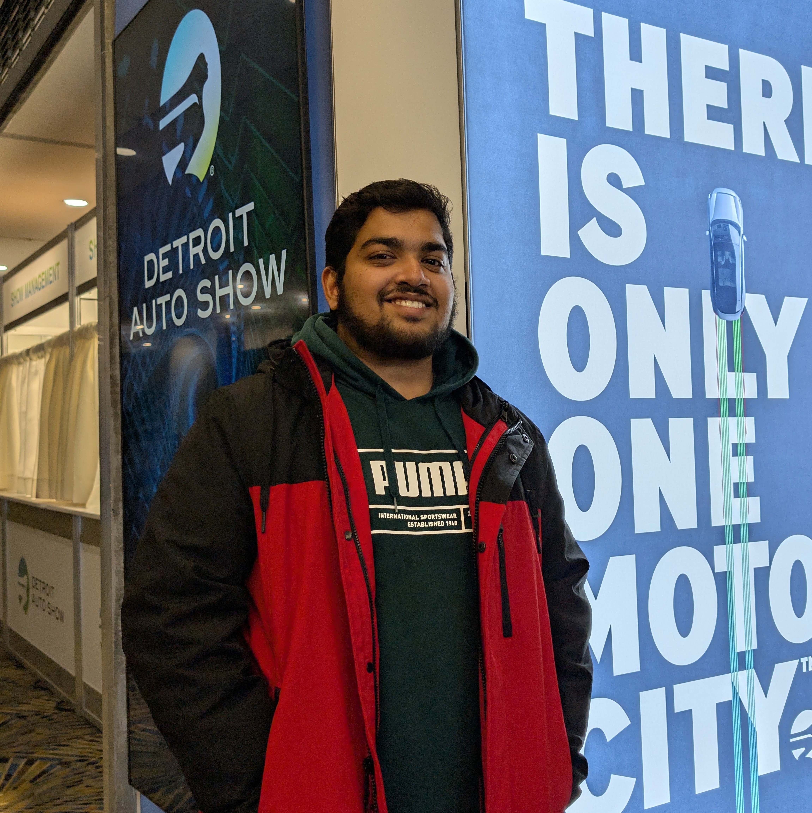

jaivanth@ml:~$ whoami
Jaivanth
Melanaturu.
AI ENGINEER · COMPUTER VISION · ROBOTICS · MULTIMODAL
I build vision models that ship — on robots, at the edge, and against data they've never seen.
# M.S. Artificial Intelligence · University of Michigan · Detroit, MI

$ cat thesis/results.json # the number that matters
81%
AUROC on generator families held out from training — +15% over a single-source baseline. Detecting AI video is easy in-domain and brutal on generators you've never seen; this closes that gap.
94%
mAP50 · autonomous go-kart perception (YOLO11)
~30k+
videos · 7 generator families evaluated
1st
place · Visual AI Hackathon (Voxel51), advanced
$ open ~/thesis # featured
Cross-Dataset
AI-Video Detection
A spatiotemporal R(2+1)D detector, evaluated the honest way — across 7 generator families and ~30K videos. I traced per-generator AUROC degradation to catastrophic forgetting, then fixed it with mixed & SupCon fine-tuning and generator-aware sampling. Trained on the Great Lakes HPC cluster.
R(2+1)DSupCon fine-tuninggenerator-aware samplingGrad-CAMSLURM · PyTorch

EER by dataset (lower = better) · DVF holds the lowest, most stable error
$ ls ~/work
01
VLM & Robotics Integration
Research · U-Michigan→ 02Autonomous Go-Kart Perception
Robotics · Lead→ 03AI-Generated Video Detection
M.S. Thesis→ 04DAPS — Parking-Space Detection
Mask R-CNN→ 05Feral Animal Detection & Deterrence
Edge · Jetson→ 06Visual AI Hackathon — 1st Place
Voxel51 · Advanced→ 07Ad-Inventory Forecasting @ MiQ
Industry · Production→$ stack --list && echo $TARGETS
visiondetection · segmentation · video classification · pose · RGB-D fusion
modelsYOLO11 · Mask R-CNN · R(2+1)D · Qwen3-VL (LoRA/QLoRA)
roboticsROS2 · UR5E · OAK-D · Orbbec Gemini · Jetson · Raspberry Pi
mlPyTorch · TensorFlow · SupCon · XGBoost · Optuna
toolsPython · C++ · Docker · SLURM · FastAPI · Linux
- Perception & autonomy
- Robotics & edge AI
- Applied research
- Trust & safety
$ ./contact.sh # available now